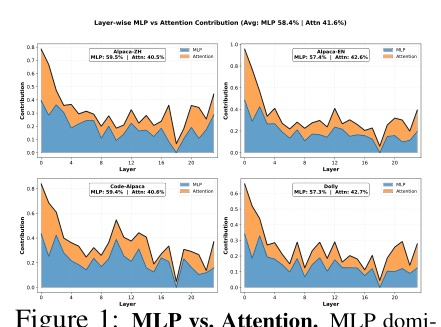
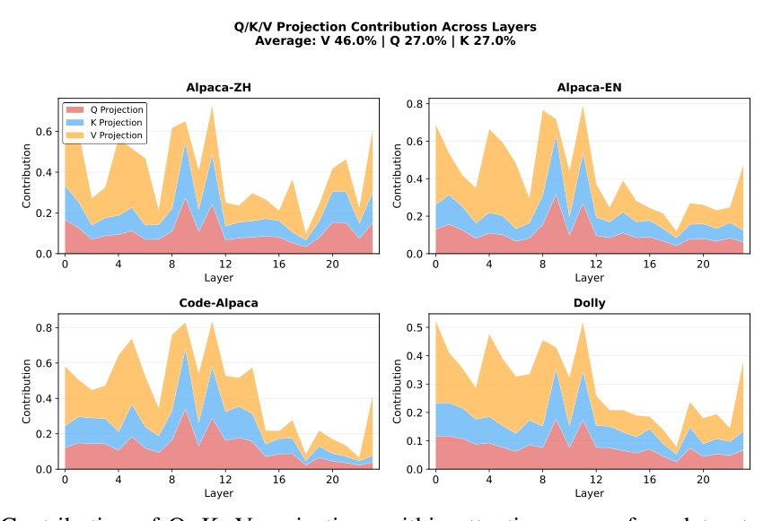
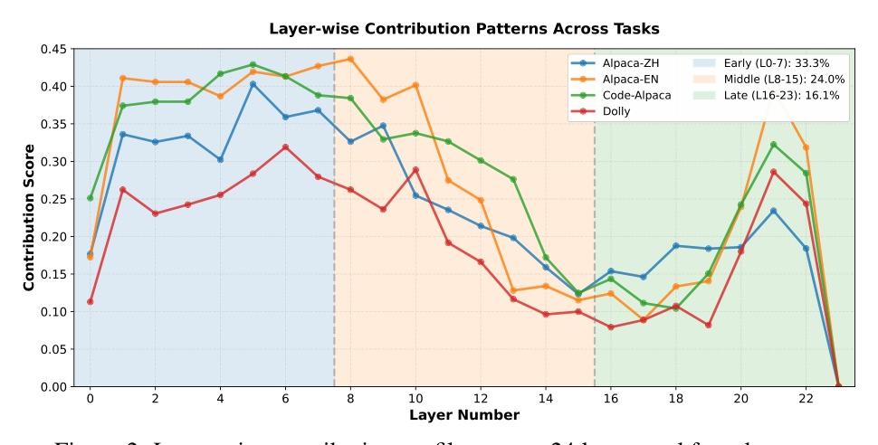
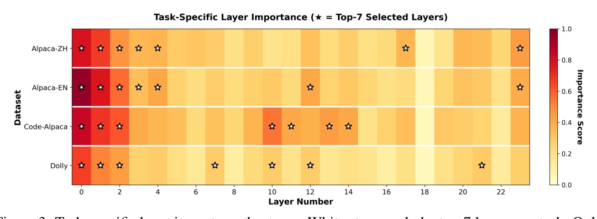
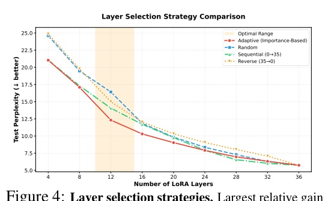

Venue：PDF p.1 頁尾「40th Conference on Neural Information Processing Systems (NeurIPS 2026)」；arXiv comment「Accepted at NeurIPS 2026 (Main Track)」· 選題：daily_discover 週一兩篇 ★ 中一篇已於 10-31 做過、一篇為 non-archival workshop → 改以 arXiv comment 搜 NeurIPS 2026 accepted 兜底 · Reviewer 資料：未抓取
用 activation patching 拆解 LoRA 後發現：效果集中在少數層，而且哪些層重要因任務而異（top-7 層跨任務 Jaccard 只有 39.5%）。Adaptive-LoRA 在凍結的 base model 上逐層置零、30 筆輸入打分、挑 top-30% 層再訓 LoRA：Qwen2.5-1.5B 上 r16 commonsense 59.1 vs 56.9，adapter 參數少 3.5×。




LoRA 的增益不是平均灑在 28 層上，而是集中在少數層 × Value 路徑 × 經 MLP 放大。更關鍵的是：哪些層會在訓練後變重要，在訓練前就看得出來—— 凍結 base model 的置零敏感度，與訓練後 LoRA 的逐層貢獻 Spearman ρ = 0.63–0.89、Pearson 0.935–0.975，top-7 命中 5/7。
所以選層可以變成「訓練前 20–62 秒的 forward-only 量測」，而不是 C(L, k) 的組合搜尋。
| Method | Rank | Layers | Commonsense Avg | Math Avg |
|---|---|---|---|---|
| LoRA | r16 | 28/28 | 56.9 | 41.1 |
| LoRA+ | r16 | 28/28 | 57.9 | 42.9 |
| DoRA | r16 | 28/28 | 55.5 | 39.5 |
| Adaptive-LoRA | r16 | 8/28 | 59.1 | 43.3 |
| LoRA | r32 | 28/28 | 60.4 | 45.5 |
| LoRA+ | r32 | 28/28 | 61.1 | 47.3 |
| DoRA | r32 | 28/28 | 59.1 | 43.7 |
| Adaptive-LoRA | r32 | 8/28 | 62.2 | 47.8 |
| Model | LoRA 層 | Ours 層 | 參數比 | LoRA Avg | Ours Avg | Δ |
|---|---|---|---|---|---|---|
| Qwen2.5-0.5B | 24/24 | 7/24 | 3.43× | 37.1 | 38.6 | +1.5 |
| Qwen2.5-1.5B | 28/28 | 8/28 | 3.50× | 56.9 | 59.1 | +2.2 |
| Qwen2.5-3B | 36/36 | 11/36 | 3.27× | 66.9 | 68.8 | +1.9 |
| LLaMA-3-3B | 28/28 | 8/28 | 3.50× | 61.2 | 62.4 | +1.2 |
| Qwen3-8B | 36/36 | 11/36 | 3.27× | 82.5 | 82.5 | +0.0 |
| Qwen3-32B | 64/64 | 20/64 | 3.20× | 87.3 | 87.1 | −0.2 |

| k | Adaptive | Random | Seq. | Rev. |
|---|---|---|---|---|
| 4 | 21.05 | 24.62 | 21.06 | 24.86 |
| 12 | 12.32 | 16.42 | 14.06 | 15.00 |
| 20 | 9.04 | 9.84 | 9.77 | 10.33 |
| 28 | 6.97 | 7.30 | 6.55 | 8.04 |
| 32 | 6.32 | 6.30 | 6.03 | 7.08 |
| 36 | 5.75 | 5.75 | 5.75 | 5.75 |
| 模式（Qwen2.5-0.5B, k=8） | 首選層 d | Code-Alpaca PPL | Alpaca-EN PPL | 加速 |
|---|---|---|---|---|
| Accuracy（不限制） | 0 | 2.294 | 4.821 | 1.13× |
| Efficiency, d* = L/4 | 7 | 2.301 | 4.854 | 1.35× |
| Efficiency, d* = L/2 | 12 | 2.308 | 4.907 | 1.46× |
| Deepest-k 參考 | 16 | 2.343 | 5.031 | 1.61× |
此頁為編者推論，已與論文內容分開標示。
These observations raise a fundamental question: if layers are not equally important for inference, why should they be equally adapted during fine-tuning?
這些觀察引出一個根本問題：如果各層對推論的重要性不同，為什麼微調時要平均地 adapt 它們？§1, p.1
Q/K/V updates change the attention output, which enters the residual stream and is transformed by downstream MLP blocks.
Q/K/V 的更新改變 attention 輸出，進入 residual stream 後被下游 MLP block 轉換。§3.2, p.3
This requires no trained adapter. ... Across five adapter configurations, base scores correlate with post-training contributions (ρ = 0.630–0.893).
這不需要訓好的 adapter……在五種 adapter 配置下，base 分數與訓練後的貢獻相關（ρ = 0.630–0.893）。§4.3, p.6
Only L0–L2 are shared by all four top-7 sets. Thus the measured rankings combine a common core with task-specific selections.
四個 top-7 集合只共享 L0–L2；量測到的排名是共同核心加上任務專屬的選擇。§3.5, p.5
來源：arXiv 2610.34756 · NeurIPS 2026 · Mechanistic Insights into LoRA: Layer Sparsity for Adaptive Fine-Tuning via Path Patching